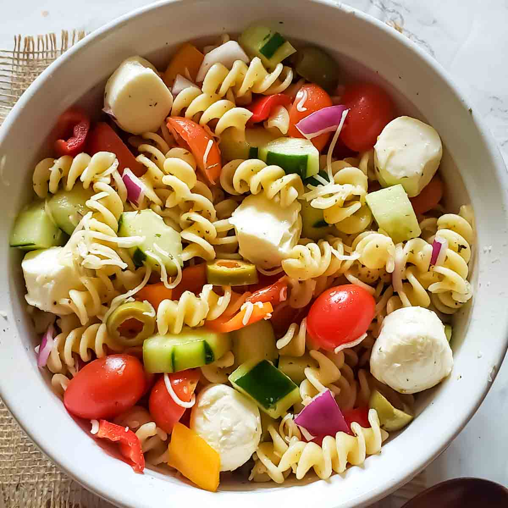

PASTA MOKORONI

Pasta Mokoroni is a popular and versatile dish made from short, tube-shaped pasta that is boiled and often combined with flavorful sauces, vegetables, or meats.
In many Kenyan households, it's commonly prepared by stir-frying boiled macaroni with onions, tomatoes, spices, and sometimes eggs, minced meat, or grated cheese for added taste and nutrition.
Loved for its quick preparation and satisfying flavor, macaroni is a go-to meal for both lunch and dinner, especially for students and families looking for a hearty, affordable dish.
Its soft texture and ability to absorb flavors make it a favorite across different age groups.
INGREDIENTS
- 2 cups of macaroni pasta
- Water (for boiling)
- Salt (to taste)
- 1 tablespoon cooking oil
- 1 onion, finely chopped
- 2 tomatoes, diced
- 1 green pepper (optional), chopped
- 1 clove of garlic, minced (optional)
- 1 teaspoon curry powder or pilau masala
- 1 egg or minced meat (optional)
- Tomato paste (optional, for richer flavor)
- Fresh coriander (dhania), chopped
-
- Boil water in a sufuria, add a pinch of salt and a bit of oil.
- Add the macaroni pasta and cook for 8–10 minutes, or until soft but firm (al dente).
- Drain the pasta and set it aside.
- In a separate pan, heat cooking oil over medium heat.
- Add chopped onions and sauté until golden brown.
- Add garlic (if using) and stir for a few seconds.
- Add chopped tomatoes and cook until soft and saucy.
- Stir in green pepper, spices (like curry powder or pilau masala), and tomato paste (optional).
- If using, add beaten egg or pre-cooked minced meat and cook until well incorporated.
- Add the boiled pasta to the pan and mix everything together evenly.
- Cook for 2–3 minutes, allowing the flavors to blend.
- Garnish with chopped fresh coriander and serve hot.